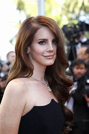

Lana Del Rey Nacida el 21 de junio de 1985 en Nueva York, Elizabeth Grant, Lana del Rey se convirtió en una sensación de Internet en 2011 con sus vídeos de "Blue Jeans" y "Video Games ", y rápidamente se convirtió en el último grito en los blogs musicales. Hija de un acaudalado inversor de Internet, tuvo unos comienzos difíciles, ya que a los 15 años la enviaron a un internado para tratar su adicción al alcohol. Tras cambiar de aires, emprendió una carrera musical bajo su verdadero nombre, Lizzy Grant, pero su EP de debut Kill Kill, publicado en 2008 de forma independiente, recibió poca atención y fue retirado rápidamente. Con la ayuda del productor David Kahne, sus canciones evolucionaron y se convirtió en Lana del Rey. Su sencillo "Born to Die" alcanzó en 2011 el número 7 en el Reino Unido y el álbum homónimo llegó a encabezar las listas de siete países. Ganó un premio BRIT en 2012 a la Mejor Actuación Revelación Internacional y otro en 2013 a la Artista Solista Femenina Internacional. Ese año también trabajó con el director Baz Luhrmann para escribir la canción "Young and Beautiful" para la adaptación cinematográfica de Luhrmann de El gran Gatsby. La canción alcanzó el número 22 en la lista Billboard Hot 100. Continuó su trabajo cinematográfico en 2014 grabando una versión de la canción "Once Upon a Dream " para Maléfica. Volvió al estudio para grabar su tercer álbum Ultraviolence, cuyo primer sencillo , "West Coast" , se publicó en 2014. El álbum encabezó las listas de éxitos en 12 países, incluidos el Reino Unido y Estados Unidos. Grabó dos canciones que se utilizaron en Big Eyes de Tim Burton - "I Can Fly" y "Big Eyes" -, así como "Life Is Beautiful" para The Age of Adaline. Después de participar en dos canciones del álbum Starboy de The Weeknd, lanzó su quinto álbum Lust for Life en 2017 con The Weeknd devolviendo el favor de colaboración en la canción principal. En 2019, regresó con su sexto álbum de estudio Norman F**king Rockwell, que incluyó los sencillos "Mariners Apartment Complex" y "Doin' Time". Su lanzamiento de palabra hablada de 2020, Violet Bent Backwards over the Grass, se grabó para coincidir con el lanzamiento de su primer libro de poesía. En 2020 hizo su primera aparición en televisión en 8 años para interpretar "Let Me Love You Like a Woman", en The Tonight Show, que apareció en el lanzamiento de marzo de 2021 Chemtrails over the Country Club. Poco después del lanzamiento del álbum, anunció que su próximo álbum, su octavo trabajo de estudio, saldría a la venta en julio de 2021. Aunque lanzó varios singles - "Blue Banisters", "Arcadia", "Text Book" y "Wildflower Wildfire "-, el álbum se retrasó varias veces antes de que finalmente publicara Blue Banisters a finales de octubre de 2021. En 2022, consiguió su canción más taquillera en el Billboard Hot 100 con el tema "Snow on the Beach", una colaboración con Taylor Swift incluida en el décimo álbum de estudio de la cantante, Midnights, de 2022. Unos meses más tarde, Lana del Rey comenzó a anunciar el lanzamiento de su noveno álbum con el tema "Did You Know That There's a Tunnel Under Ocean Blvd" como single principal. Descrito como uno de sus trabajos más personales e íntimos, el álbum vio finalmente la luz en marzo de 2023 y alcanzó el número 3 en la lista Billboard 200, además de encabezar la Official UK Albums Chart..
 Contacto y informacion reciente